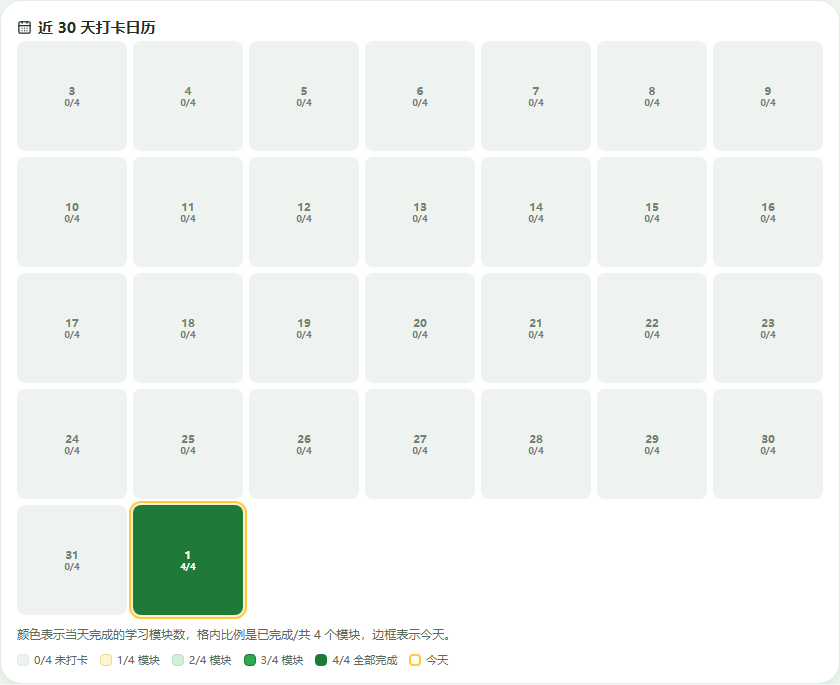
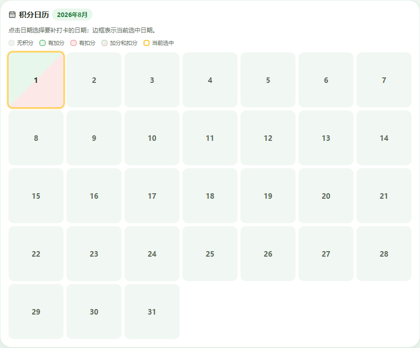
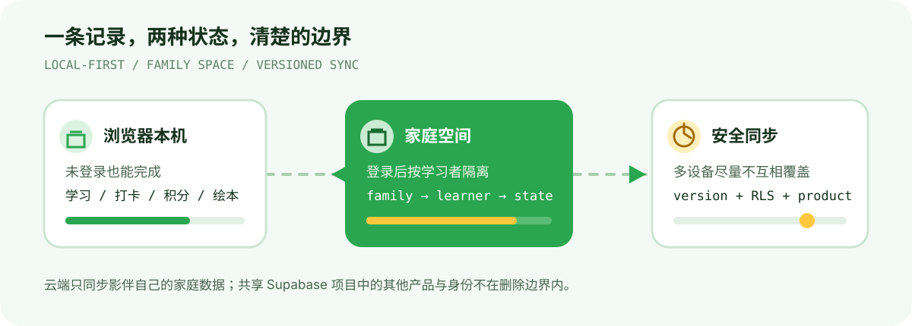

v1.1.1MITViteVanilla JavaScriptSupabase先看产品
影伴把家长和孩子每天都会遇到的几件事放在一起：今天学了什么、完成到哪里、坚持了几天、有没有同步到家庭空间。它是一款面向家庭的离线优先 PWA，不要求先登录才能开始记录。

首页示例使用本地演示数据，不包含真实家庭信息。
四个模块，一个家庭节奏
| 语文 识字 · 古诗 · 写字，每日独立打卡 | 数学 口算 · 数感游戏 · 数独，每日独立打卡 |
| 英语 主题单词 · 每日推送 · 跟读打卡 | 绘本 多地优质绘本 · 跟读 · 思考题 |
除了学习模块，影伴还把成长记录与行为积分分开：学习日历回答“今天完成了几个模块”，积分日历回答“今天发生了哪些加分或扣分”。
看见坚持，而不是堆积任务数
成长日历

同一天内的多个语文任务只计作 1 个语文模块；4/4 表示四个学习模块全部完成。
积分日历

积分使用独立图例，黄色边框表示当前选中的日期，不改变成长日历统计。
记录如何流动

- 离线优先：未登录即可学习、打卡、记录积分和绘本。
- 家庭空间：一个家长可以管理多个学习者。
- 跨设备恢复：使用版本号处理并发冲突。
- 清楚的边界：家庭、学习者和学习状态按家庭边界隔离。
统计口径
| 页面 | 回答的问题 | 状态含义 |
|---|---|---|
| 首页 | 今天完成了多少？ | 已完成/4 个学习模块 |
| 成长 | 最近 30 天坚持得怎样？ | 0/4 到 4/4 |
| 积分 | 今天发生了哪些行为反馈？ | 无积分、加分、扣分、混合积分 |
快速开始
使用应用
npm ci
npm run dev打开终端输出的本地地址即可。不要直接双击 index.html，因为浏览器在 file:// 协议下无法正常加载 ES Module。
验证项目
npm run check
npm run build
npm run test:unit
npm run test:e2e工程骨架
src/app.js 页面渲染、交互和本机状态
src/learning-state.js 学习状态机与四个模块的打卡分组
src/cloud.js 登录、家庭空间、同步、导出与删除
supabase/migrations/ 家庭数据、RLS、生命周期和删除权限
tests/unit/ 纯函数与学习状态机测试
tests/e2e/ 离线、云端和数据生命周期测试安全边界
浏览器端只使用 publishable key。真正的数据隔离由 Supabase RLS、家庭成员关系和产品 ID 共同完成；绝不能把 secret key 或 service_role key 放进仓库。
文档导航
| 使用指南 | 家长登录、家庭空间、打卡、日历、同步、语音和安装 |
| 架构文档 | 数据模型、同步策略、RLS、迁移和发布闸门 |
| Logo 使用说明 | 绿色版、霓虹版与功能子标的适用场景 |
| 隐私说明 | 数据范围和生命周期 |
| 安全政策 | 安全问题私下报告 |
| Roadmap | 已完成阶段与后续方向 |
当前边界
影伴 v1.1.1 已部署到 sm.shadow.wang。它目前是面向家庭的开源 PWA，不包含广告、第三方追踪或儿童独立账号体系；公开运营前仍需完成儿童隐私政策、家长同意流程、内容版权审核、备份和事故响应等运营工作。
联系我
如果你对 B 端产品、AI 产品开发、供应链数字化或 Shadow 系列产品感兴趣，可以通过以下方式联系我：
- X（Twitter）：@Gollumgulu
- 微信公众号：Ward 的 AI 产品实战
- 小红书 / 微博 / 抖音：全网同名「Ward 的 AI 产品实战」——小红书 · 微博 · 抖音
- 产品主页：Shadow Nexus
- Email：wardlu@126.com
可接 1v1 咨询和项目陪跑，欢迎联系。产品诊断 · AI 实施 · 工作流 / Skill / 系统定制
License
代码采用 MIT License。仓库中提到的第三方书名、品牌、视频平台和内容链接仍归各自权利人所有；MIT License 不授予第三方内容或商标的使用权。